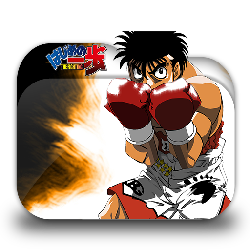

RESEÑA DE LA SERIE
La serie cuenta la historia de Makunouchi Ippo, un joven estudiante de preparatoria bastante introvertido que sufre el acoso de un grupo de matones en su colegio.
Después de ser salvado de una paliza por un boxeador llamado Takamura Mamoru, Ippo comienza a sentir fascinación por el mundo del boxeo.

ESPIRITU DE LUCHA
HISTORIA
Hajime no Ippo (はじめの一歩 traducido al español como El primer paso?), también conocido como Fighting Spirit y Espíritu de lucha en Hispanoamérica,
es un manga sobre boxeo creado por el autor Jyoji Morikawa (森川ジョージ) que además de ser un mangaka, es un mánager de boxeadores entre los que destaca Manabu Fukushima.
El manga es publicado por la editorial Kōdansha, en la revista semanal Shūkan Shōnen Magazine. Este comenzó a publicarse en el año 1988 y cuenta con 130 volúmenes en la actualidad.
El anime fue realizado por el estudio de televisión Madhouse bajo la dirección de Atoshi Nishimura. Se realiza su transmisión televisiva en el canal Nippon TV Network el 10 de octubre de 2000 hasta el 27 de marzo de 2002,
con un total de 76 episodios. Además, esta serie posee una película que continúa los 76 episodios titulada はじめの一歩: チャンピオンロード (Hajime no Ippo: Champion Road)
y una OVA llamada はじめの一歩: 間柴vs木村 (Hajime no Ippo. Extra Round: Ryo Mashiba vs Tatsuya Kimura). Este anime fue licenciado en Estados Unidos por la compañía Geneon y su nombre en el occidente fue el de Fighting Spirit.

TECNICAS UTILIZADAS
Ippo es un boxeador clásico “in-fighter” y es muy conocido por sus victorias KO por remontada, su defensa de estilo Peek-a-Boo y sus fuertes golpes que incluyen tres firmas de golpes:
gancho Hígado “liver blow”, puño de la Gacela “Gacela Punch”, y el Dempsey Roll o La Técnica Dempsey, el cual consiste en balancearse de un lado a otro, de manera que al mover la cabeza forma un 8 invertido,
el modelo de golpes utilizados por Mike Tyson, Floyd Patterson, y Jack Dempsey, respectivamente también suele tener un abuso del Dempsey roll ocupando lo en casi todas sus peleas exceptuando algunas como contra Hamer Nao.